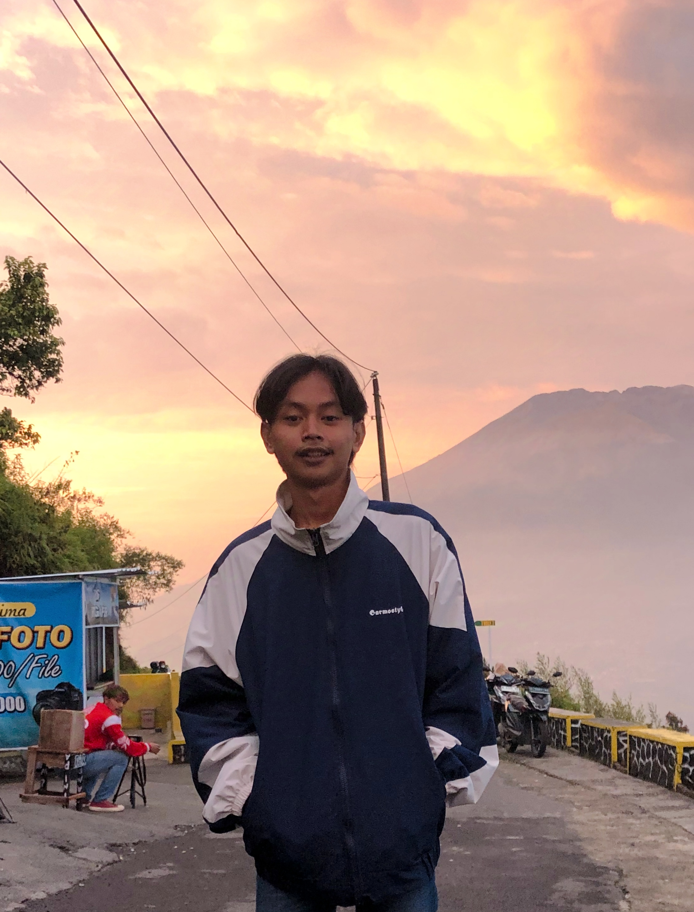

About Me.

Dhani cahyo Kurnia Afandy
mahasiswa Informatika
Saat ini, saya sedang dalam perjalanan untuk mengembangkan keterampilan dan pengetahuan saya di bidang Web Developer. Meskipun saya masih dalam tahap belajar, saya sangat antusias untuk terus berkembang dan mencoba hal-hal baru. Setiap proyek yang saya kerjakan, baik itu untuk tugas kuliah, atau proyek pribadi, adalah kesempatan berharga untuk mengasah kemampuan saya dan memahami lebih dalam tentang bidang ini.